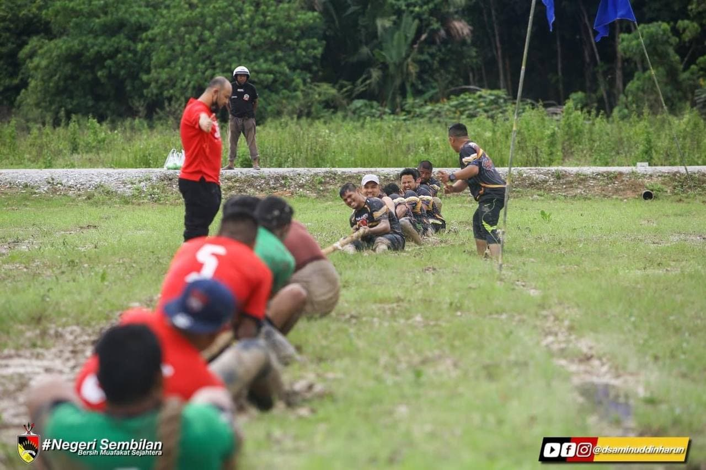

.JPG)


My hometown is at Kuala Pilah, Negeri Sembilan. Kuala Pilah was an interesting place to visit.
Because at here you see many examples of minangkabau house with the sloping 'buffalo horn' style rooflines.
Not just that, there also many places that you can go to visit.
| INTERESTING PLACES IN KUALA PILAH | |||||||||||
|---|---|---|---|---|---|---|---|---|---|---|---|
| LADANG ALAM WARISAN | SERI MENANTI, KUALA PILAH | |
|||||||||
| MUZIUM DIRAJA SERI MENANTI | SERI MENANTI, KUALA PILAH | |
|||||||||
| NS DAIRY FARM | JUASSEH, KUALA PILAH | |
|||||||||
| TERATAK ZAABA | BATU KIKIR, KUALA PILAH | |
|||||||||
| GUNUNG ANGSI | BUKIT PUTUS, KUALA PILAH | |
|||||||||
| TAMAN REKREASI ULU BENDUL | ULU BENDUL, KUALA PILAH | |
|||||||||
| JERAM TENGKEK | BATU KIKIR, KUALA PILAH | |
|||||||||
| WAVE ROCK, BUKIT BAGINDA | BATU KIKIR, NEGERI SEMBILAN | |
|||||||||
| BUKIT SENALING | SENALING, KUALA PILAH | |
|||||||||
| ATV KG JKIN EXTREME PARK | BUKIT PUTUS, NEGERI SEMBILAN |
|
On 11 & 12 Dicember 2021, there was held "Pesta Bola Ngoca Kuala Pilah" at Perkampungan Budaya Terachi, Kuala Pilah
that place is near my house, so i go there with my neighboor to support my friend teams.
Actually 'Ngoca' is a word in the Negeri Sembilan dialect which means to catch fish using equipment such as nets & poles at rice field,
but this time they change the actvities by playing a soccer so that is why they call it "pesta bola ngoca".
So here is some photo during the activities.

.jpg)

.jpg)
this is some highlight during the "pesta bola ngoca"